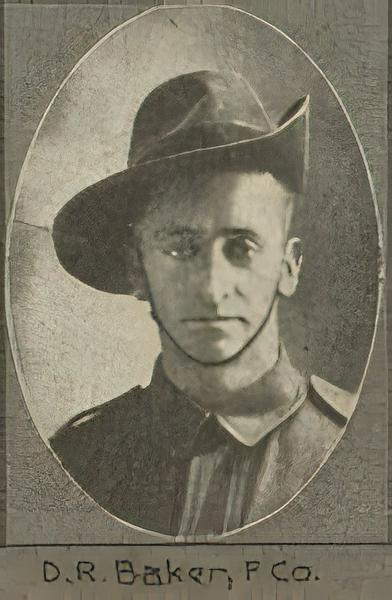

Hello and welcome

(Photograph courtesy of : John Oxley Library,
State Library of Queensland [Image number:
702692-19141024-s0023-0027])
This year is the centenary of the birth of the ANZAC legend. As
such, many people, particularly young people, are looking for ways
to connect with people of that period and inparticular, those who
created the ANZAC legend.
This site presents the letters of Douglas Raymond Baker, who came
from Gympie, Queensland, Australia. He enlisted in August 1914 and
during the years that followed, he wrote letters and post cards to
his family at home. In them, he describes much of the goings-on of
the life of an ANZAC, his feeling and opinions, and experiences
while visiting his relatives in England during leave.
They start from the beginning of basic training in Brisbane in
August 1914 and end in May 1918.
They are offered here so that others may get an understanding of
life as an ANZAC and get a sense of what life on the battlefield was
like.
From the menu on the left, read the Introduction to set the scene.
Then, to start reading the letters, click on Letter and Post Cards
in the menu on the left. All the letters are searchable using the
search bar at the top right of this page.
Introduction
By Douglas Richard Baker (son of Douglas Raymond Baker)
These are copies of letters written by my father Douglas Raymond
Baker during the First World War (1914-1918) to his family in Gympie.
I have three thick exercise books in which the letters were copied in
hand writing by my Aunt Alice, his sister. I understand that this was
done so his letters could be sent on to other members of the family. I
don’t know if the originals are still in existence, probably
not.
In the early letters Alice has not included the name of the person
they were written to but later she writes at the beginning,
“Letter to Dot”, “Letter to Mother”, etc. and
later still copies the original, “Dear Al”, “Dear
Mag”, etc.. Likewise the endings are often not laid out fully as
we would do but Al may have done this or Dad may have been saving
space on the page.
Some letters are slightly out of date order in the books but as most
of these are around the time his father died I have put them in the
correct order as this is crucial to understanding the sense of the
contents. A lot will be missing – many, many ships were sunk but
thanks to Aunt Alice we have these copies of the ones that did get
through.
Where Dad used brackets in a letter I have used [ ] style and where I
have made any comment or explanation I have used ( ) and Italics.
Where he uses the word “gay” it is used in the true
sense, bright, happy, carefree, etc., This is the original meaning of
the word before it became associated with the homosexual community.
The amounts of money are, of course, in Pounds, shillings and pence
but as these are out of date and we have no pounds sign in the
computer I have written them in, sometimes showing the decimal
equivalents. One Pound equalled $2, one shilling equalled 10 cents and
one penny equalled a little under one cent. After a while I stopped
putting the equivalents in as they had cno significance unless you
knew the relative cost of things then and now. A shilling –
equivalent to ten cents might actually alent to ten cents might
actually buy buy ten or twenty dollars worth of goods now.
Abbreviations and terms
| Abbreviation |
Term |
| Coy |
Company(part of a Battalion) |
| Batt. |
Battalion |
| Col. |
Colonel |
| Sergt. |
Sergeant |
| Capt. |
Captain |
| Lieut. |
Lieutenant (pronounced “Lef-tenant”) |
| Q.M. |
Quarter Master |
| Comp. |
also Company |
| P.C. |
Post Card (not Personal Computer!) |
| C.B. |
Confined to Barracks (leave stopped as a punishment) |
| Big hits |
Top ranked officers |
| Brass hats |
Top ranked officers |
| Dry canteen |
Bar and/or cafeteria, etc. where no alcohol is served |
| Wet canteen |
Bar and/or cafeteria, etc. where alcohol is available |
| Sapping |
digging a tunnel or deep trench to approach or undermine an
enemy position |
| L. Horse |
Light Horse |
| Good nick or great nick |
Good health |
| Bonsorful |
Wonderful, marvellous. (in 2009 speak, “awesome”,
“cool”) |
| M. G. S. |
Machine Gun Section |
| Territorials |
Soldiers of the English Volunteer Reserve |
| Terriers |
Territorials |
| Bomb |
Unless dropped from an aeroplane these would have been Mills |
| Bombs |
An early version of the hand grenade |
| Blighty |
England |
| Duke |
Dad’s/family’s dog |
| O.R. |
Orderly Room |
Additional Comments by Ian Stuart Baker (son of Douglas Richard
Baker)
As the grandson of the Douglas Raymond, I'd like to share some
thoughts with modern readers. Apart from the language issues that my
Dad highlights, it would also help to recognise that in Grandfathers
day, the letter was the only means of international communications for
average people (telegrams were expensive and used rarely and
international telephone calls, rarer still). That's why these letters
are so important and why their content gives us window into their
lives.
From discussions with my Dad, it has came to light that the content
of letters to his direct family deliberately leave out much of the
dreadful suffering and drudgery experienced by the diggers. This
intentional self-editing was intended to allay the fears and concerns
of those at home, inparticular, his mother and sisters.
Finally, let me express a debt of thanks to Great Aunt Alice for
diligently transcribing the original letters for without this effort,
we would not have the material we do today. Also, my gratitude to my
father for his work transforming the hand-written script into a typed
paper record and then into electronic format, making my part in this
infinitely easier.
Letters
Select a year:
1914 – 1915
– 1916 – 1917
– 1918
Letters – 1914
These letters have not been populated, please select a different year
Letters – 1915
Fort Tigne
Hospital, Malta, May 4th 1915
Letters – 1916
Somewhere in France,
July 30th. 1916
Somewhere in France,
13th Aug. 1916
Letters – 1917
No. 2 Can. Gen.
Hospital, France. Nov. 1st. ’17
Letters – 1918
These letters have not been populated, please select a different year
Battles
An Account of the Gallipoli Landing
Fort Tigne
Hospital, Malta, May 4th 1915
The "Big Push"
Somewhere in France,
July 30th. 1916
Battle of Poziers
Somewhere in France,
13th Aug. 1916
Getting Wounded, Again
No. 2 Can. Gen.
Hospital, France. Nov. 1st. ’17
What it Takes to Win a Military Medal
Harrowby Camp School,
Grantham
Places
As a matter of interest, I will try to list here the names of places
Dad mentions:
Related
Douglas Raymond BAKERs summary of service record in
the AIF Project
His complete original service record (Note: this is
20 pages long.)
Picture of the 9th Battalion, AIF, boarding the
Omrah, Brisbane
Embarkation
Roll - Australian War Memorial
Sitemap
Fort Tigne Hospital, Malta, May 4th 1915
May 4th. 1915.
Dear Mother,
About six hundred of Australian wounded
[including myself] have arrived at the above address and all are in
good spirits. Of course those who were very severely wounded were
left
at Alexandria and there was a great number of them too. But I
believe
I am starting at the wrong end, so will go back a little over a week
when we were on board the “Malda” in Lemnos Island
Harbour. I could go back even further than that to the time when we
left Mena Camp [Feb. 28th] and sailed by the troopship
“Ionian” to Lemnos Island, of our five weeks under
canvas
there and all our experiences, etc.; but I am afraid it would take
too
long and at present there is plenty of later news to write about.
Well, to resume my story – we were on
board
the Troopship “Malda” on Saturday, April 24th, waiting
for
British destroyers to take us to the place where we were to land and
meet the Turks. At 10 p.m. we had our last meal on the
“Malda” and somewhere about midnight, two destroyers
came
alongside and we were immediately transhipped to them. Previously to
this though, the “Malda” had left Lemnos Harbour with us
and taken a few hours trip to some place unknown. It was at this
place
that the destroyers joined us and our Company went on board the
“Colne” and we steamed away from the “Malda”
in the direction of the Dardanelles. We were all crowded on the
deck,
quite comfortable, and at 3 a.m. hot cocoa was served out to all
hands. About this time the “Colne” stopped and it was
4.30
a.m. before she moved on again. We had not gone far before land
could
be seen ahead and we all then got into small boats which were
alongside. The order was given to push off and make for land, just
as
day was beginning to break. The oarsmen gave way with a will and we
were still 100 yards from shore when the exciting times commenced.
There were six boat-loads of us and many others from other
destroyers
and cruisers all making for the shore at once.
The Turks must have been expecting us for their
bullets began to fly all round the boats. Luckily not one in our
boat
was hit but others did not get off so well, for one fellow was
killed
and many were wounded. When our boat grounded we jumped out, almost
up
to the hips in water and made for the shore. It was my luck to step
into a hole and I went almost under water, getting my rifle wet, but
I
managed to get to land otherwise unhurt. George Thomas was with us
and
gave the order to “Fix bayonets, open out and advance.”
Ahead of us was a steep hill covered with thick undergrowth from 2
feet to 5 feet high and forming excellent cover for the enemy and
also
ourselves, but not bullet-proof. We got to the top of the first
hill,
about 100 feet high, in quick time and without mishap, the Turks
retreating before us as we advanced. Ahead of us as far as we could
see the country was all hills and gullies covered with the same
thick
undergrowth.
It was now broad daylight and as we forged
onward
an occasional bullet would whiz past unpledasantly close, but the
enemy were poor rifle shots, for when we got to the top of the next
hill only two had been wounded. We all got mixed up as we advanced
owing to the nature of the country and I lost sight of most of my
own
mates. At this point not many of the enemy were opposed to us,
although we came across many abandoned kit-bags and gear, as if they
had left in a hurry. But on our left the firing was fairly heavy and
continuous so the party I was with moved in that direction and we
were
soon in the thick of it. By this time many British battleships had
opened fire on the Turkish forts and also on the enemy artillery,
their shells flying over our heads and making an awful row. We drove
the Turks back and captured four guns, many tents and ammunition,
but
reinforcements did not come up to us fast enough and we were forced
to
retire – but not for long. The enemy took up a strong position
behind the top of a hill and there were many thousands of them
including many German officers. They easily outnumbered us and had
plenty of artillery and machine guns. All we had to depend on was
our
rifle fire and 1 or 2 machine guns so their advantage over us was
indeed great. The fire of the enemy was absolutely murderous but our
fellows advanced again and again and were dropping in all directions
but would not be stopped.
That Sunday the Australians proved what stuff
they were made of and many a one made a hero of himself, and many a
poor fellow died urging his mates onward with his last breath. The
hail of bullets was simply awful and the shrapnel shells were
bursting
round us all the time. They must have expended a marvellous amount
of
ammunition. Many of our officers were shot down and most of the time
we got no orders at all but had to rely on ourselves and do the best
we could. At any time we did happen to see an officer the order was
always the same, “Get ahead, lads, and stick it into
them.” Another advantage the Turks had over us was a thorough
knowledge of the country and they had the ranges for their fire. And
I
suppose they were fresh too, but we had been up all the night
before,
got wet coming ashore and had had no breakfast, although we had food
in our haversacks but had no time to eat it.
The Battalions were all mixed up and I saw very
few of my own Coy.. Once I spotted Monty Woodyatt and gave him a
call;
he yelled out to me to come his way and we both forged ahead but got
seperated almost immediately and I never saw him again. I heard
later
that he had been shot dead but do not yet know if it is true.
Shortly
after seeing Monty I joined Geo. Thomas and Billy Money behind some
bush and the bullets were raining around us thick and fast. The
cries
of the wounded men about us were deadly and there were no
stretcher-bearers about. Our position became too hot for us so Bill
Money and I dashed ahead; I do not know how the bullets managed to
miss us. We kept going ahead in short rushes and soon were almost
near
enough to resume firing again. As usual we were lying down behind
bushes which formed a good cover but were not bullet proof. We had
only been in this position a few minutes when I felt a thud in the
back and afterwards found that a bullet had ripped the side of my
haversack and tore a hole through a tin of “bully-beef”
that I had in it. Our haversacks were strapped to our backs for
convenience. It was a close shave but everyone was getting used to
close shaves by then.
You know, Mother, it might sound like skite but
I’m satisfied that the old tale that a soldier nearly dies of
fright when first under fire is all bosh. I heard many of our
fellows
say the same thing. It makes you feel a bit uncomfortable but it
also
makes you want to get at the enemy and pay it all back with
interest.
There was one bad point about our fellows, they were too eager and
rushed ahead in any sort of order, often exposing themselves
unneccessarily. Within a minute of getting one in my haversack, I
heard a groan beside me and saw Bill Money’s head drop. We
were
lying at full length on our stomachs. He said, “Ray, I’m
hit” and I, with the aid of another chap who was near turned
him
over and got his equipment off. When I opened out his coat and shirt
there was a bullet hole showing high up on his left breast, it might
have been in the shoulder blade and very little blood was coming
from
it. Poor old Bill was almost unconscious and asked me if it had
touched his heart. Of course I told him that it had not and that it
would be alright. We managed to put on his “first field
dressing” [one of which we all carry] and gave him a drink of
water. We made him as comfortable as possible under the
circumstances
and I stacked his gear in front of his head so as to stop another
bullet from hitting him. All the time I was expecting to get lobbed
myself for the fire of the enemy was simply hellish. So fast and
thick
were the bullets coming that some of the time the sound of them was
for all the world like the buzz of an electric fan – a
continual
hum. We had only just got Bill fixed when another chap on the other
side of me was shot through the arm. The bullet must have cut an
artery for when I cut open his sleeve the blood poured out and my
hands were smothered in blood. We bound his arm as well as we could
and told him to crawl to the rear. Two other chaps near us stopped
bullets so I thought it was time to stop attending to wounded men
for
it is greatly against military rules for riflemen to stop to attend
to
wounds. Everyone unhurt was needed in the firing line, so I had
another look at Bill Money who seemed quite unconscious and then
retired a little to see if I could get any stretcher-bearers but
there
were none about and they were yelling out for more men so I joined a
few chaps who were advancing and moved up with them. We went to the
right of where I had left poor old Bill, so I did not see him again.
Later in the day one of my Company told me he had seen Bill making
his
way towards the beach so I am in hopes that he is getting on
alright.
I would give anything to be sure of it.
As we advanced the fire, if possible, became
hotter but I seemed to bear a charmed life, one bullet ripped
through
my left coat sleeve at the wrist without touching my arm. Shortly
afterwards, when lying down, my water bottle stopped one and I lost
all the water, which was a serious loss indeed. But I had a still
narrower escape when a bullet tore through the collar of my tunic
right under my chin. The badge must have turned it aside for there
is
a dent in it and a little bit of lead sticking to it. My collar was
turned up a little for the bullet hit from the underneath side. I am
thinking of cutting it off and sending it home to you for a
keepsake.
It was not till about 3 p.m. that I was put out
of action, when we were giving the Turks some hot fire and, of
course,
getting it hot in return. Their shrapnel was very deadly and we
would
hear the shells go whizzing over our heads and then go off with a
bang. These shells contain hundreds of bullets and when they burst
the
bullets fly out. It was a shrapnel bullet that got me. A shell burst
just a few yards to the left of me [I was lying down] and the
sensation I got was as if someone had hit me with a large club full
force on the muscle on the left arm. At the same time something hit
me
on the right forearm and left a black bruise there. My left arm was
now useless and the blood was flowing freely so I thought it was
time
to retire and accordingly did so, dodging bullets all the time.
A few hundred yards back from the firing line I
met one of our sergeants (what the hell’s the Sgt. doing
there?
D.B.) who put on my first field dressing. I saw then that a bullet
had
gone right through my arm near the shoulder, the hole in each side
being about half an inch in diameter. I had nearly two miles to go
to
the beach – it was a deadly journey. I expected to get a few
more gentle reminders from the beastly Turks for stray bullets were
whistling about all the time. Anyway I got to the beach without
further harm and now I am none the worse for my experience. It was
hard luck to be put out of action the first day, but still I had
about
ten hours of it - and it was hot stuff,too. Some old soldiers who
have
been in action before say they have never seen or heard anything
like
it. They say there would be nothing in France to equal it.
It was a very severe day for the Australians
and
we suffered heavily. Colonel Lee [who was shot through the hand] was
greatly cut up and was heard to exclaim, “Oh! My poor Ninth,
my
poor Ninth, they will be cut to pieces, they are bearing the brunt
of
it all.” The scene on the beach in the afternoon was awful
– the doctors and ambulance men had their hands full; wounded
men were lying everywhere. I saw George Thomas and Billy McGowan on
the beach, both wounded in the shoulder, the former rather badly, I
think. Even on the beach we were not too safe for the enemy were
firing on the battleships and their shrapnel was bursting over us
all
the time. Unless you happened to be there you would hardly credit
how
marvellous were some of the escapes from death and the many
different
kinds of wounds showed that after all there are not many parts of
the
human body on which bullets prove fatal. One chap was shot right
through the head, the bullet going in about an inch behind one eye
and
coming out an inch behind the other. He is not much the worse for it
except that he has two lovely black eyes and they are nearly closed
up, but his sight is not injured. There are many fellows with
bullets
still in their heads and they are doing alright. One poor chap was
struck deaf and dumb by the bursting of a shrapnel shell close over
his head but was otherwise unhurt. Another fellow who had half his
face blown off just coolly finished himself off with his own rifle.
A
mate of his was with him at the time.
Dear Mother, I suppose you will think I am
giving
you too much of the horrors of war, but I thought you all would like
to know all I could tell you about our first engagement. Here is one
amusing incident to tone it down a little. A private was lying down
behind cover near the firing line when someone else dashed up and
dropped down beside him. The private noticed at once that he had no
rifle so he roared at him, “What are you doing up here without
a
rifle you d----- fool.” The other fellow [who happened to be
an
officer] just calmly replied, “Officers don’t carry
rifles, you d----- fool.” I suppose the private would feel
rather small, that is, if he had time to.
As quickly as possible the wounded were taken
off
in boats – the very bad cases going to the Hospital ship and
the
others to the transport ships that were lying near. About 800
[including myself] were placed on board the Clan MacGillivary; the
hospital ship was filled and two or three other troopships, so you
can
see there was a great number of wounded, somewhere about 5,000 I
think. It was near 5 p.m. when we boarded the Clan Mac - and did not
leave her till this morning. Since then we have, I mean since we
went
on board the Clan Mac - up till this morning, we have slept on the
hard lower deck and lived on biscuits, cheese and jam.
You know, dear Mother, we first went to
Alexandria where they found there would not be room for us so only
the
worse cases were taken off. The next morning after our arrival
there,
the “Clan Mac” turned tail with us and made for Malta.
We
all growled a bit at first at being cooped up on board for a few
more
days but now I am glad for the climate here will be miles better
than
Egypt. Mr. Thomas was taken off at Alexandria. Capt. Jackson was
wounded but he was on some other boat. I do not think his was a bad
case. Nearly all our officers were wounded and I believe 2 or 3 were
killed.
Wed., May 5th. The Clan Mac dropped anchor in
Malta harbour early yesterday morning and after breakfast we were
taken ashore in lighters drawn by steam tugs. We are now quartered
in
barracks, 12 men being in each room and we are quite comfortable. I
am
on the 3rd Floor and there is a lovely view of the forts and the sea
on one side and of the city on the other. We have electric light and
plenty of water laid on and very convenient. The people are very
kind
and gave us a warm welcome. We are allowed to stroll about and
yesterday many of us visited the English school, to the great
delight
of the kiddies, who seemed to think we were great heros. They
pestered
the life out of us for badges and foreign coins and gave us great
bunches of lovely flowers. Our room looks quite gay with the flowers
I
got. We had quite a gay time with the youngsters and the school
mistress [who is a bosker girl] could get no work out of them for
the
rest of the day.
Yesterday afternoon the school kids were going
round with chocolates and cigarettes and also papers and magazines
for
the poor wounded Australians. This room in which I am writing was
opened to us yesterday and paper, pens and ink supplied free –
also soft drinks. The chaplain stationed here is a fine fellow and
works hard for the entertainment of the soldiers as do also many of
the ladies.
And now dear home folk, I hope I have not
wearied
you with such a long epistle – anyway I am just about at the
end
of my tether, but will write again soon. I have no idea how long I
will be here but reckon my arm will be quite well in a fortnight or
less, so if my luck is in I may be back at the front before you get
this letter. It is a long time since I had a letter and goodness
knows
when we are likely to get another mail. But keep on writing for we
may
get them sometime or other. I only hope you are all enjoying the
best
of health and continue to do so and that this letter reaches you
alright. We have been told that these letters will not be censored.
While at Alexandria I sent you a p.c. written in a hurry.
Well, good-bye dear Mother, with the best of
love
to you all. Hope Dad is in good nick, also the girls and Herb. I
would
very much like to know if you got the news of the Australians
fighting
at Gallipoli and what the papers said about it. I think we did our
duty.
Somewhere in France, July 30th. 1916
May 4th. 1915.
Dear Mother,
About six hundred of Australian wounded
[including myself] have arrived at the above address and all are in
good spirits. Of course those who were very severely wounded were
left
at Alexandria and there was a great number of them too. But I
believe
I am starting at the wrong end, so will go back a little over a week
when we were on board the “Malda” in Lemnos Island
Harbour. I could go back even further than that to the time when we
left Mena Camp [Feb. 28th] and sailed by the troopship
“Ionian” to Lemnos Island, of our five weeks under
canvas
there and all our experiences, etc.; but I am afraid it would take
too
long and at present there is plenty of later news to write about.
Well, to resume my story – we were on
board the Troopship “Malda” on Saturday, April 24th,
waiting for British destroyers to take us to the place where we were
to land and meet the Turks. At 10 p.m. we had our last meal on the
“Malda” and somewhere about midnight, two destroyers
came
alongside and we were immediately transhipped to them. Previously to
this though, the “Malda” had left Lemnos Harbour with us
and taken a few hours trip to some place unknown. It was at this
place
that the destroyers joined us and our Company went on board the
“Colne” and we steamed away from the “Malda”
in the direction of the Dardanelles. We were all crowded on the
deck,
quite comfortable, and at 3 a.m. hot cocoa was served out to all
hands. About this time the “Colne” stopped and it was
4.30
a.m. before she moved on again. We had not gone far before land
could
be seen ahead and we all then got into small boats which were
alongside. The order was given to push off and make for land, just
as
day was beginning to break. The oarsmen gave way with a will and we
were still 100 yards from shore when the exciting times commenced.
There were six boat-loads of us and many others from other
destroyers
and cruisers all making for the shore at once.
The Turks must have been expecting us for
their
bullets began to fly all round the boats. Luckily not one in our
boat
was hit but others did not get off so well, for one fellow was
killed
and many were wounded. When our boat grounded we jumped out, almost
up
to the hips in water and made for the shore. It was my luck to step
into a hole and I went almost under water, getting my rifle wet, but
I
managed to get to land otherwise unhurt. George Thomas was with us
and
gave the order to “Fix bayonets, open out and advance.”
Ahead of us was a steep hill covered with thick undergrowth from 2
feet to 5 feet high and forming excellent cover for the enemy and
also
ourselves, but not bullet-proof. We got to the top of the first
hill,
about 100 feet high, in quick time and without mishap, the Turks
retreating before us as we advanced. Ahead of us as far as we could
see the country was all hills and gullies covered with the same
thick
undergrowth.
It was now broad daylight and as we forged
onward
an occasional bullet would whiz past unpledasantly close, but the
enemy were poor rifle shots, for when we got to the top of the next
hill only two had been wounded. We all got mixed up as we advanced
owing to the nature of the country and I lost sight of most of my
own
mates. At this point not many of the enemy were opposed to us,
although we came across many abandoned kit-bags and gear, as if they
had left in a hurry. But on our left the firing was fairly heavy and
continuous so the party I was with moved in that direction and we
were
soon in the thick of it. By this time many British battleships had
opened fire on the Turkish forts and also on the enemy artillery,
their shells flying over our heads and making an awful row. We drove
the Turks back and captured four guns, many tents and ammunition,
but
reinforcements did not come up to us fast enough and we were forced
to
retire – but not for long. The enemy took up a strong position
behind the top of a hill and there were many thousands of them
including many German officers. They easily outnumbered us and had
plenty of artillery and machine guns. All we had to depend on was
our
rifle fire and 1 or 2 machine guns so their advantage over us was
indeed great. The fire of the enemy was absolutely murderous but our
fellows advanced again and again and were dropping in all directions
but would not be stopped.
That Sunday the Australians proved what stuff
they were made of and many a one made a hero of himself, and many a
poor fellow died urging his mates onward with his last breath. The
hail of bullets was simply awful and the shrapnel shells were
bursting
round us all the time. They must have expended a marvellous amount
of
ammunition. Many of our officers were shot down and most of the time
we got no orders at all but had to rely on ourselves and do the best
we could. At any time we did happen to see an officer the order was
always the same, “Get ahead, lads, and stick it into
them.” Another advantage the Turks had over us was a thorough
knowledge of the country and they had the ranges for their fire. And
I
suppose they were fresh too, but we had been up all the night
before,
got wet coming ashore and had had no breakfast, although we had food
in our haversacks but had no time to eat it.
The Battalions were all mixed up and I saw very
few of my own Coy.. Once I spotted Monty Woodyatt and gave him a
call;
he yelled out to me to come his way and we both forged ahead but got
seperated almost immediately and I never saw him again. I heard
later
that he had been shot dead but do not yet know if it is true.
Shortly
after seeing Monty I joined Geo. Thomas and Billy Money behind some
bush and the bullets were raining around us thick and fast. The
cries
of the wounded men about us were deadly and there were no
stretcher-bearers about. Our position became too hot for us so Bill
Money and I dashed ahead; I do not know how the bullets managed to
miss us. We kept going ahead in short rushes and soon were almost
near
enough to resume firing again. As usual we were lying down behind
bushes which formed a good cover but were not bullet proof. We had
only been in this position a few minutes when I felt a thud in the
back and afterwards found that a bullet had ripped the side of my
haversack and tore a hole through a tin of “bully-beef”
that I had in it. Our haversacks were strapped to our backs for
convenience. It was a close shave but everyone was getting used to
close shaves by then.
You know, Mother, it might sound like skite but
I’m satisfied that the old tale that a soldier nearly dies of
fright when first under fire is all bosh. I heard many of our
fellows
say the same thing. It makes you feel a bit uncomfortable but it
also
makes you want to get at the enemy and pay it all back with
interest.
There was one bad point about our fellows, they were too eager and
rushed ahead in any sort of order, often exposing themselves
unneccessarily. Within a minute of getting one in my haversack, I
heard a groan beside me and saw Bill Money’s head drop. We
were
lying at full length on our stomachs. He said, “Ray, I’m
hit” and I, with the aid of another chap who was near turned
him
over and got his equipment off. When I opened out his coat and shirt
there was a bullet hole showing high up on his left breast, it might
have been in the shoulder blade and very little blood was coming
from
it. Poor old Bill was almost unconscious and asked me if it had
touched his heart. Of course I told him that it had not and that it
would be alright. We managed to put on his “first field
dressing” [one of which we all carry] and gave him a drink of
water. We made him as comfortable as possible under the
circumstances
and I stacked his gear in front of his head so as to stop another
bullet from hitting him. All the time I was expecting to get lobbed
myself for the fire of the enemy was simply hellish. So fast and
thick
were the bullets coming that some of the time the sound of them was
for all the world like the buzz of an electric fan – a
continual
hum. We had only just got Bill fixed when another chap on the other
side of me was shot through the arm. The bullet must have cut an
artery for when I cut open his sleeve the blood poured out and my
hands were smothered in blood. We bound his arm as well as we could
and told him to crawl to the rear. Two other chaps near us stopped
bullets so I thought it was time to stop attending to wounded men
for
it is greatly against military rules for riflemen to stop to attend
to
wounds. Everyone unhurt was needed in the firing line, so I had
another look at Bill Money who seemed quite unconscious and then
retired a little to see if I could get any stretcher-bearers but
there
were none about and they were yelling out for more men so I joined a
few chaps who were advancing and moved up with them. We went to the
right of where I had left poor old Bill, so I did not see him again.
Later in the day one of my Company told me he had seen Bill making
his
way towards the beach so I am in hopes that he is getting on
alright.
I would give anything to be sure of it.
As we advanced the fire, if possible, became
hotter but I seemed to bear a charmed life, one bullet ripped
through
my left coat sleeve at the wrist without touching my arm. Shortly
afterwards, when lying down, my water bottle stopped one and I lost
all the water, which was a serious loss indeed. But I had a still
narrower escape when a bullet tore through the collar of my tunic
right under my chin. The badge must have turned it aside for there
is
a dent in it and a little bit of lead sticking to it. My collar was
turned up a little for the bullet hit from the underneath side. I am
thinking of cutting it off and sending it home to you for a
keepsake.
It was not till about 3 p.m. that I was put out
of action, when we were giving the Turks some hot fire and, of
course,
getting it hot in return. Their shrapnel was very deadly and we
would
hear the shells go whizzing over our heads and then go off with a
bang. These shells contain hundreds of bullets and when they burst
the
bullets fly out. It was a shrapnel bullet that got me. A shell burst
just a few yards to the left of me [I was lying down] and the
sensation I got was as if someone had hit me with a large club full
force on the muscle on the left arm. At the same time something hit
me
on the right forearm and left a black bruise there. My left arm was
now useless and the blood was flowing freely so I thought it was
time
to retire and accordingly did so, dodging bullets all the time.
A few hundred yards back from the firing line I
met one of our sergeants (what the hell’s the Sgt. doing
there?
D.B.) who put on my first field dressing. I saw then that a bullet
had
gone right through my arm near the shoulder, the hole in each side
being about half an inch in diameter. I had nearly two miles to go
to
the beach – it was a deadly journey. I expected to get a few
more gentle reminders from the beastly Turks for stray bullets were
whistling about all the time. Anyway I got to the beach without
further harm and now I am none the worse for my experience. It was
hard luck to be put out of action the first day, but still I had
about
ten hours of it - and it was hot stuff,too. Some old soldiers who
have
been in action before say they have never seen or heard anything
like
it. They say there would be nothing in France to equal it.
It was a very severe day for the Australians
and
we suffered heavily. Colonel Lee [who was shot through the hand] was
greatly cut up and was heard to exclaim, “Oh! My poor Ninth,
my
poor Ninth, they will be cut to pieces, they are bearing the brunt
of
it all.” The scene on the beach in the afternoon was awful
– the doctors and ambulance men had their hands full; wounded
men were lying everywhere. I saw George Thomas and Billy McGowan on
the beach, both wounded in the shoulder, the former rather badly, I
think. Even on the beach we were not too safe for the enemy were
firing on the battleships and their shrapnel was bursting over us
all
the time. Unless you happened to be there you would hardly credit
how
marvellous were some of the escapes from death and the many
different
kinds of wounds showed that after all there are not many parts of
the
human body on which bullets prove fatal. One chap was shot right
through the head, the bullet going in about an inch behind one eye
and
coming out an inch behind the other. He is not much the worse for it
except that he has two lovely black eyes and they are nearly closed
up, but his sight is not injured. There are many fellows with
bullets
still in their heads and they are doing alright. One poor chap was
struck deaf and dumb by the bursting of a shrapnel shell close over
his head but was otherwise unhurt. Another fellow who had half his
face blown off just coolly finished himself off with his own rifle.
A
mate of his was with him at the time.
Dear Mother, I suppose you will think I am
giving
you too much of the horrors of war, but I thought you all would like
to know all I could tell you about our first engagement. Here is one
amusing incident to tone it down a little. A private was lying down
behind cover near the firing line when someone else dashed up and
dropped down beside him. The private noticed at once that he had no
rifle so he roared at him, “What are you doing up here without
a
rifle you d----- fool.” The other fellow [who happened to be
an
officer] just calmly replied, “Officers don’t carry
rifles, you d----- fool.” I suppose the private would feel
rather small, that is, if he had time to.
As quickly as possible the wounded were taken
off
in boats – the very bad cases going to the Hospital ship and
the
others to the transport ships that were lying near. About 800
[including myself] were placed on board the Clan MacGillivary; the
hospital ship was filled and two or three other troopships, so you
can
see there was a great number of wounded, somewhere about 5,000 I
think. It was near 5 p.m. when we boarded the Clan Mac - and did not
leave her till this morning. Since then we have, I mean since we
went
on board the Clan Mac - up till this morning, we have slept on the
hard lower deck and lived on biscuits, cheese and jam.
You know, dear Mother, we first went to
Alexandria where they found there would not be room for us so only
the
worse cases were taken off. The next morning after our arrival
there,
the “Clan Mac” turned tail with us and made for Malta.
We
all growled a bit at first at being cooped up on board for a few
more
days but now I am glad for the climate here will be miles better
than
Egypt. Mr. Thomas was taken off at Alexandria. Capt. Jackson was
wounded but he was on some other boat. I do not think his was a bad
case. Nearly all our officers were wounded and I believe 2 or 3 were
killed.
Wed., May 5th. The Clan Mac dropped anchor in
Malta harbour early yesterday morning and after breakfast we were
taken ashore in lighters drawn by steam tugs. We are now quartered
in
barracks, 12 men being in each room and we are quite comfortable. I
am
on the 3rd Floor and there is a lovely view of the forts and the sea
on one side and of the city on the other. We have electric light and
plenty of water laid on and very convenient. The people are very
kind
and gave us a warm welcome. We are allowed to stroll about and
yesterday many of us visited the English school, to the great
delight
of the kiddies, who seemed to think we were great heros. They
pestered
the life out of us for badges and foreign coins and gave us great
bunches of lovely flowers. Our room looks quite gay with the flowers
I
got. We had quite a gay time with the youngsters and the school
mistress [who is a bosker girl] could get no work out of them for
the
rest of the day.
Yesterday afternoon the school kids were going
round with chocolates and cigarettes and also papers and magazines
for
the poor wounded Australians. This room in which I am writing was
opened to us yesterday and paper, pens and ink supplied free –
also soft drinks. The chaplain stationed here is a fine fellow and
works hard for the entertainment of the soldiers as do also many of
the ladies.
And now dear home folk, I hope I have not
wearied
you with such a long epistle – anyway I am just about at the
end
of my tether, but will write again soon. I have no idea how long I
will be here but reckon my arm will be quite well in a fortnight or
less, so if my luck is in I may be back at the front before you get
this letter. It is a long time since I had a letter and goodness
knows
when we are likely to get another mail. But keep on writing for we
may
get them sometime or other. I only hope you are all enjoying the
best
of health and continue to do so and that this letter reaches you
alright. We have been told that these letters will not be censored.
While at Alexandria I sent you a p.c. written in a hurry.
Well, good-bye dear Mother, with the best of
love
to you all. Hope Dad is in good nick, also the girls and Herb. I
would
very much like to know if you got the news of the Australians
fighting
at Gallipoli and what the papers said about it. I think we did our
duty.
Somewhere in France, 13th Aug. 1916
13th August 1916.
Dear Herb,
It is the Sabbath day and for a wonder we are
having a rest so I have time to write a few lines while reclining in
my billet which at some remote period was a fowl-house. But we are
accustomed to all sorts of conditions now and learn to make the best
of things however severe they may be. For some time now we have been
on the move from one village to another, rarely stopping at one
place
for more than a few days. We see a great deal of the country but
would
enjoy it more if we had less to carry. Of course you will have read
much about the Australians being in the “Big Push” but
the
papers could not convey any idea of the real truth of such hellish
fighting as we were in at Pozieres. I have written to Mother three
times since I came out and hope the letters arrived alright, giving
her some sort of an account of things. Our fellows have fought
marvellously well, gaining all their objectives but at a great cost
and the casualty lists, if published in the Australian papers will
be
a great blow to the people. Our Division [the 1st] which was the
first
of the Australians to take part in the push had about 9,000
casualities and the 2nd Division suffered just as much. For the few
days we were in it, it was hell on earth, practically no sleep,
little
to eat and shells of all sorts and all sizes being pelted at us day
and night. Dead and wounded lay on all sides and there was blood
everywhere, in one part of the trench where there had been hand to
hand fighting, we noticed among the dead an Australian, his hands
gripping a German by the throat while the latter had his arms around
the other’s body – both were dead, had been killed by a
bomb while struggling together. The many sights we saw would make
your
blood curdle, they were too awful for me to describe, but there were
many heroic incidents which made me feel glad that I am British. Our
bombers for instance did great work. On the second morning of our
stunt the Huns were holding a bit of trench that we wanted and they
were very hard to shift, so the officer of the bombers spoke to his
men, “Will we shift them, lads?”, “Right ho,
sir” was the answer and they hopped out over the parapet, 20
or
30 of them, in the face of shells and machine gun fire, raced across
to the enemy trench and standing there in broad daylight they pelted
their bombs with great coolness. It was a great bit of work and we
kept up machine gun fire over their heads during the scrap. The
trench
was won, most of the occupants being killed, and of course, our
chaps
suffered too. This is only one little incident, the stretcher
bearers
toiled and sweated for all they were worth under very severe
conditions. Our Coy had sixteen guns in action and the only one we
lost was the one I was on – the Hun’s artillery had the
range to a T and lobbed over gas shells, tear shells, high
explosives,
shrapnel, etc. from 18 pounders to 9.2 inch. It was “No
Bon”. Our team consisted of 5 men and 1 officer. The officer
and
1 man were wounded and 2 men killed. It was hard luck but such
things
are to be expected.
Well anyway, dear Herb, all that is over now
and
we are satisfied that things can be no worse. The 4th Division are
now
in and we may relieve them soon. At present we are at the village of
Bonneville waiting for orders, having a quiet time so –
what’s the use of worrying as long as we are in good health..
I
hope all at home are in the best of health also, yourself and the
girls. I have written to Mrs. McCathie, you will hear the news from
her not included here. I will also be writing home again soon. Fancy
you saying – “Vouley-vous promenade,
mademoiselle.”
She might reply, “Oui monsier, merci.” Tres Bon, eh? I
hope Will Raymond and family are well, give them my love and also
remember me to any other friends. Could you let me know if home
affairs are settled up yet and how Mother is and the girls. I am
afraid many letters have miscarried.
Well, hooray old chap, love to all from,
Ray.
We are going to win. D.R.B
No. 2 Can. Gen. Hospital, France. Nov. 1st. ’17
1st November 1917
Dear May,
Does it surprise you to receive a letter from
your humble servant and would you like to know why I have at last
roused myself and found sufficient energy? Well it is because of a
few
pressed violets and a nice message, also Mother’s account of
her
stay at Sylvan Rd. while in Brisbane. It has served to remind me of
my
last few days in Brisbane in 1914 when the dear old Dad was there
and
I visited your people – my cousins. Little did I think then
that
three years would pass and still no immediate hopes are there of
returning.
As I lie here I have much time for reflection
and
the experiences of the past rise vividly before me and I live again
through those joys and sorrows, good times and hard times. And on
thinking it over I come to the conclusion that on the whole I have
been very lucky – for I still survive while so many of my pals
have gone West and since coming to France in April 1916 I have been
in
all engagements the 1st Division has taken part in. Now I guess I am
going to miss a few and I am not sorry, for having got over the
worst
effects of this wound I feel quite comfortable.
The day I was wounded, Oct. 4th, we had
advanced
with six guns after the first assault of the infantry and were
making
positions in an old cemetery. Everywhere the ground had been churned
up by the shells and only one huge cross of rough timber remained,
the
rest lay smashed and broken. At intervals about us were those
battered
“Pill-boxes” which had formed the Huns new system of
defence. The attack had been entirely successful and hundreds upon
hundreds of prisoners were hurrying back to the rear without escort
and glad enough that their fighting days were over. Many of them
were
wounded and were being assisted by their comrades and some were
carrying our wounded on stretchers. The enemy artillery were
shelling
us all the time and many of their own men were struck down which was
hard luck for them. We were in a very exposed position but could not
take cover for our guns had to be got into action, so the men were
digging away for all they were worth, taking as little notice as
possible of the bursting shells. Within a quarter of an hour four of
my men had been wounded and were taken back – I say “my
men”, May, because I happened to be the Sergeant in charge and
was supervising the mounting of the guns, the officer had retired to
one of the “pill-boxes” [those solid concrete
blockhouses
of the Huns]. About an hour before this I had received a slight
wound
in the shoulder, hardly severe enough to allow me to retire, but
made
my arm stiff and prevented me from working. About the worst thing to
stand in war is being subjected to shell-fire while not being to do
anything in return. There we were just waiting to be shot down, it
was
only a matter of time, one after another was going and each man
wondered as he worked when his turn would come.
My turn came as I was standing near the cross
watching a couple of the lads working – there was a loud crash
of a bursting shell just behind me, I felt a thud in the back and my
knees gave way, I tried to speak but only a whisper came, my lung
had
been pierced and I could feel the blood flowing inside. With help I
managed to struggle to the nearest Pill-box where a First-Aid party
were stationed. I was placed on a stretcher after the wound was
bandaged and then began the worst journey I have ever experienced in
my life – over miles of torn and broken ground , shell holes,
mud and water. I just longed for someone to knock me right out.
After
an hour or so I began to lose consciousness and only have a dim
recollection of things. I know I was placed in an open truck on a
small railway alongside some wounded Germans and that rain started
to
fall – I was lying on my face all the time. Next I remembered
my
wet clothes being cut off me and then – I awoke next morning
in
a nice clean bed with a nurse bending over me.
For a few days I did not care much what
happened,
then my breathing began to get easier and I did not cough up so much
blood and since then I have been improving daily. But the metal is
still somewhere inside and I do not know what the doctor intends to
do, probably he will operate. There, dear May, you have the whole
ghastly business of my recent downfall. - It is now nineteen months
since our Division landed in France and we have taken part in the
fighting on many parts of the front in northern France and Belgium.
We
have had great opportunities of seeing the country, seldom stopping
in
one place for long, but marching day after day, sometimes for weeks
at
a time from village to village – coming in contact with all
manner of people, seeing in the summertime miles and miles of
beautiful country and acres upon acres of growing crops, well
trimmed
hedges of blackberry, hawthorn, etc., grasslands smothered with
wildflowers, buttercups, daisies and other coloured flowers in wild
profusion. We have gazed from the summits of many a great hill at
the
surrounding expanse of peaceful countryside and it has been good to
look at.
At times we have travelled by train [generally
in
horse boxes] from one part of the front to another and it has been
interesting to watch the ever-changing scenery – wild and
rugged
sometimes and at others low-lying farming districts stretching far
into the distance. No fences are to be seen and nothing to tell
where
one farm ends and another begins. We have stopped in villages, towns
and cities, slept in all kinds of places, barns generally but also
in
stables, fowl houses, warehouses, estaminets and chateaux, in tents
and in the open with the sky for a roof. In all sorts of weather,
too,
we have managed to jog along in full marching order from sweltering
heat to extreme cold and snow a foot deep – under a blazing
sun
and heavy downfalls of rain and through mud and slush up to our
knees.
It has indeed been a great experience and a varied one, yet we are
generally very happy and none the worse for it all.
There are times, you know, dear May, when we
rest
for a week or two in some quiet spot after being in action. The
officers are easy on us then, late rising in the morning, no
parades,
a good canteen, football, cricket, etc., and leave to neighbouring
villages or the nearest big town, concerts and pictures at night and
now and again a big day of Brigade or Divisional Sports. The latter
will generally start with an “Inspection and March Past”
– General Birdwood, Walker, Plumer or some other big
“Brass Hat”.
Will I tell you about the hard times or should
I
leave all that out? Just to give you an idea of things I will try
and
tell you of our doings during the week before I was wounded which is
generally the way of things before going into the line. We were at
the
town of Steenvoide when orders came to move and those at the head of
affairs, being in good humour, supplied motor-buses for the troops
but
we had to march about 3 miles to the starting point where the whole
Brigade was lined up on the roadside. The ride was quite enjoyable,
lasting two or three hours, we started in France, crossed the border
and finished up in Belgium near the village of Dickiebush. It was
getting dark then and we marched on another four miles, feeling
quite
tired when we reached our destination which was an open grass
paddock
containing many shell holes full of water. No one seemed to know
what
to do, as per usual, so we sat down and waited, getting cold,
feeling
hungry and, sad to relate, growling and swearing. After a while a
fatigue party was called up to draw canvas shelters from some place
a
few hundred yards away, then we got busy and rigged our sleeping
quarters. It was quite a job, being pitch dark and in a strange
place.
Later on we had tea and by ten o’clock wre able to retire for
the night after mounting a gas guard. The following morning after
breakfast things had to be made ship-shape, sandbags were procured
and
suitable dug-outs made, our guns and gear were overhauled and belts
filled. (The ammunition belts for the Vickers Machine Gun were
re-usable and had to be refilled with .303 cartridges.) That night a
sergeant from each section [myself from No. 1] was told off to go up
to the line to look at the positions we were to take over. Not
knowing
the way we were told to wait at “Hell-fire Corner” for
an
officer who would accompany us. We started out at 7.30 p.m., passed
through the ruined city of Ypres and three miles the other side came
to Hell-fire Corner. But we did not wait there for that beastly
corner
deserves its name, so we retired a few hundred yards. While we
waited
five horses and two men were killed and two men wounded at the
corner
by shells. The road was thick with traffic all the time, mostly
horse
transport with ammunition. Fritz was shelling all the time and blew
up
two ammunition dumps on the roadside. I can tell you we were glad
when
the officer came along and we were able to proceed. The walk was a
long one and rough, the sides of the track were lined with dead
horses
and mules in various stages of decay, broken waggons and guns and
debris of all kinds and a few dead men too. Eventually we reached
the
positions and learned details of things in general and then began
the
trip back to camp about eight miles. Fancy a sixteen mile tramp, we
got to bed about 3 a.m. properly tired out but thankful enough to
have
got through safely.
Well the next night I was politely informed
that
my services were required again, to guide a working party up to the
line to improve the positions. I did not feel like going but of
course
someone had to and it was no use growling. They were kind enough to
provide motor vans for us as far as Hell-Fire Corner and we walked
the
remainder of the way carrying sand-bags and shovels. Reaching the
position without mishap we set to work and finished about 3 a.m.
having had to stop twice and take cover from the heavy shelling.
Fritz
was shelling the back area with gas-shells, that invisible stuff
that
can only be identified by the taste like mustard in the mouth and a
slight stinging in the nostrils. Of course we were not thinking of
gas
when on the way home but everyone was wearing their gas helmet in
what
is called the “Alert” position, ready to adjust in a few
seconds, this is enforced within a certain distance of the line.
Suddenly we walked into this gas and very soon took a tumble to what
it was and had our masks on in quick time. We kept on going to get
through it and were able to take off our respirators after about 5
minutes, the little we swallowed did not hurt us. Nothing further
occurred to disturb us except a few shells coming closer than they
had
a right to and we lobbed home just as day was breaking, tired, weary
and worn, but no casualties. Last night others had a trip up but I
had
a good nights rest and was glad of it. Then the following night,
Oct.
3rd., the night preceeding the attack, we all went up with our guns
and gear, getting into position about 3 a.m. on the 4th.. Zero time
[the time arranged for the opening of the artillery barrage] was
seven
minutes to six and we waited anxiously for that time to come for we
were to work in co-operation with the artillery. The night was
fairly
quiet, Fritz was doing most of the shelling, only a few of our big
guns replying.
Then, dear May, the time arrived and suddenly
there was one awful roar as hundreds of guns opened up, from
eighteen
pounders to twelve inch, the noise was terrific and the sight was
wonderful to behold, those continuous quivering flashes of light and
the sound of shells rushing through the air overhead, the swish of
the
small ones and the large ones like railway trains tearing along. And
in the midst of it all could be heard the sharp rattle of our
machine
guns, fifteen yards apart over the whole front – it was indeed
some barrage. This was kept up for a couple of hours but lifting at
intervals as the infantry advanced and took their objectives. And
now
we are up to the point where our section of guns advanced to the old
cemetery.
I wonder, dear May, if you have grown tired of
all this rigmarole or has it proved a little interesting, I hope the
latter is the case though perhaps I have not made myself quite
clear.
If you have time try and write a few lines for I would like to know
how you all are. Jack I guess will be quite a big chap now and you
also will have grown out of all recognition. Give my love to your
Mother and Father, congratulations to Captain Raymond though rather
late, may it soon be Major.
Love to yourself and Jack, dear May,
Your affect. cousin,
Ray.
Harrowby Camp School, Grantham
Harrowby Camp School, Grantham.
Dear Mother,
Some days ago I wrote the preceeding pages to
you
and have not had a chance to resume. We are kept going at this
school
all day and at night have two hours writing to do in the lecture
hall.
I am keeping very well but quite fed up with this sort of work and
will be glad when it is over. There are not many Australians here,
it
is a school for Tommies mostly with English officers at the head.
We Australians are always being chipped about
lax
discipline, fooling, inattentiveness, strolling about with our hands
in our pockets, failing to salute and numerous other petty things,
but
it makes little difference to our fellows, we take it all in with
easy
tolerance and in class work beat the Tommy every time. They will
soon
take a full tumble and leave us alone.
By your letters I can see that many of mine
have
gone astray including a very long one I wrote after the Bullecourt
stunt last May telling you of that great fight of the 5th and 6th of
May when we were in deadly danger of being wiped out or taken
prisoner
– it was for that stunt that I was awarded the Military Medal.
There was some good killing of Prussian Guards that morning of May
6th. I was firing my machine gun at them at a range of 40 yds.
–
did I miss? No!
My gun was knocked out and my team of men
lessened by three. I took charge of another gun which was short
handed
and carried on the good work but Fritz had the range - the gun was
rendered useless though not much knocked about and a few more men
went
West. At this point we had to retire slightly into a side trench
– the Sgt. was wounded so I took the only remaining gun and
here
we made what we reckoned would be our last stand. We were hemmed in
on
three sides, the Huns were getting closer, coming in hundreds, our
force numbered about 30 altogether – oh but they did fight; it
thrills me even now to think of that glorious fight. We knew the
German dead outnumbered ours. The shells from both sides were
ripping
and tearing around us, I had no tripod for my gun but just balanced
it
on the top of the parapet, firing all the time whenever I could see
those grim grey figures with the basin-like steel hats on their
heads.
We knew it had to be a fight to a finish – win or die and we
won
and just as things turned in our favour I dropped from the parapet
with a wound in my arm [right muscle], no longer being able to fire
a
gun.
Reinforcements came up and our original
positions
were reoccupied – very few Huns got back to tell the tale. I
will not go into details of the awful slaughter and the sickening
scenes of that deadly struggle – it was the hardest fighting I
have yet been in. I managed to get out alright and at night was in
Hospital at Etaples near the coast.
It was amusing to read of your experiences with
Joe on the shopping expedition, he is just the same old stick
–
but very good at heart always, isn’t he. Give him my love when
you write and best wishes to all the family. I can see that Doris
has
not changed much, she is indeed a “brat” (I think this
was
Dad’s pet name for her, his youngest sister – maybe all
the family used it) and must be good company for you all when at
home.
I had some fine evenings with Edwin when at the O.T.B. but some-how
I
have lost the run of him altogether now. A few days before I left
the
O.T.B. I called to see him but the room he had occupied was locked
up
and since then I have heard nothing of him – he may have gone
to
France – but anyhow Doris will know for he was always writing
to
her. Geo. J. is in France again, I had a letter from him the other
day
written in an old German Pill-Box (usually a round concrete
fortification with horizontal slits to allow the inmates to fire at
the enemy with being too exposed themselves) – he was well and
happy.
I would like to see Ivy in my old uniform
–
she ought to parade at the drill – shed and try to enlist, how
is Friz, I suppose he is in England somewhere, perhaps I will run
across him yet. All the girls seem to be busy at one thing or
another
– it is great to hear of their doings, brings home nearer to
me
and makes me wish I was with you all again. Getting on for four
years
now and still no sign of the end. Australia will be quite strange to
me when I return and all friends too. I often think of Olga and Herb
and hope by now they are settled down in a nice home of their own
– my love to them and the best wishes in the world for their
future happiness. I wonder if Al is still with you or has she
succeeded in obtaining a new place. I know dear Mum you would miss
her
but I reckon she should try something better and not come down a
penny
below 3 Pounds & 10 Shillings. Mag ought to go a bit steady, I
guess she does the work of about three men, cutting hedge, rearing
poultry, etc. etc.. I wonder if she would like to cut my crib
(usually
lunch to take to work) – sounds funny does it not? I
don’t
think I would ever growl about it again, I have been through rather
too much that I won’t forget, but still Mother dear I seem
none
the worse, just jogging along as per usual – in good health.
I will not be able to write much the next few
weeks while at this school but will keep you posted even if only a
P.C.. Tell Dot I will answer her bonsor letter later, in the
meantime
she may carry on with the “garden beautiful” and keep
well. That is about all, I must go now and do my duty as a soldier
and
a man. Do not worry. I am safe in England. Do not work too hard,
please. Love to all friends. Best of love to you dear Mum and all at
home. Hooray.
(There is no signature, I don’t know if
Dad
finished the letter like that or if Alice left it off by mistake.)